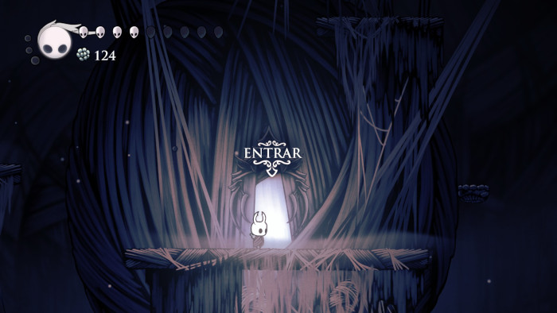
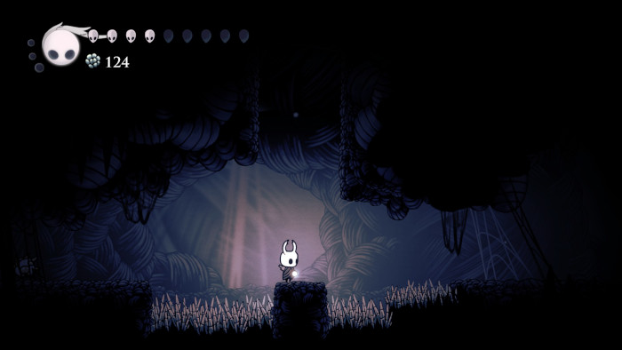

Ninho Profundo
O Ninho Profundo é escuro e úmido, com cavernas estreitas e paredes cobertas de musgo e raízes.

Claustrofobia e Mistério
A região é opressiva, com plataformas suspensas e criaturas adaptadas à escuridão. A sensação é de exploração em um ambiente selvagem e inexplorado.


Feito por Antonio Marcos
Gmail: antoniomarcoscraft@gmail.com